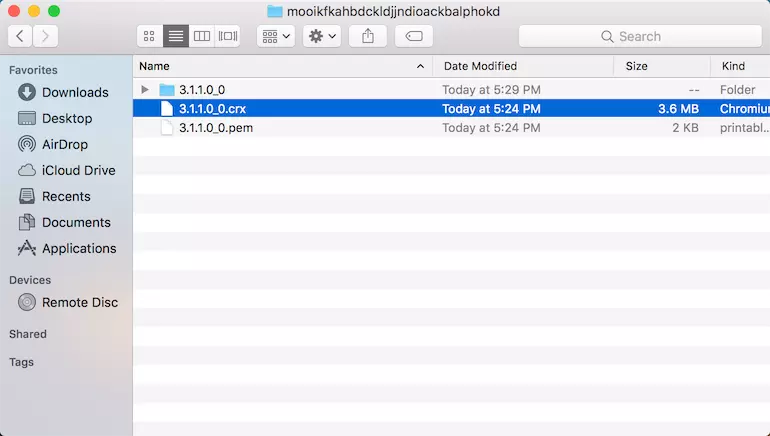
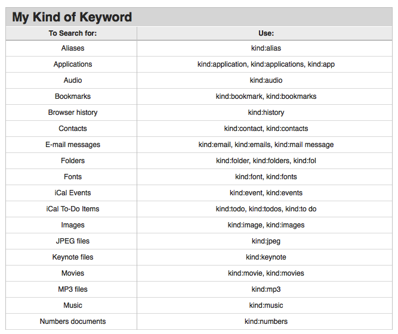

@(工作笔记)
MacOS-record
[TOC]

/hello world/
---
mds_stores是啥？那么牛逼
mds_stores直接占用92%内存，导致应用崩溃！！！！电脑业很热啊变得
kernel_task也是个神物，强制占用1.5个G的内存
请问如何解决啊，已经影响到工作了
机子是定制版Mac pro垃圾桶
系统是10.10.3
已解决 如下：
mds、mds_stores、mdworker这几个进程都是为了Spotlight索引而疯狂的，解决方案：
关闭
sudo mdutil -a -i off
打开
sudo mdutil -a -i on
MAC OS系统下BEYOND COMPARE破解方式
执行如下操作:
1.进入Beyond Compare应用程序MacOS目录下(/Applications/Beyond Compare.app/Contents/MacOS) 2.将主启动程序BCompare重命名为BCompare.real 3.在同级目录下新建一个脚本文件命名为BCompare，文件内容往下看 4.给新建的文件BCompare，授权文件执行权限
1.创建BCompare文件命令如下：
在这个脚本里面写如下代码，第一行是注明解释器，第二行是删除注册信息，第三行是启动真正的主程序。
#!/bin/bash
rm "/Users/$(whoami)/Library/Application Support/Beyond Compare/registry.dat"
"`dirname "$0"`"/BCompare.real $@
2.授权文件执行权限
chmod a+x /Applications/Beyond\ Compare.app/Contents/MacOS/BCompare
这样我们每次打开软件的时候，都会先自动删掉注册信息，也就是永久免费试用了。
"打不开/dev/vmmon" 解决办法：
"打不开/dev/vmmon" 解决办法：
和HAXM或者docker冲突，说一下mac上haxm冲突的解决办法:
1 启动vmware fushion前先卸载haxm的内核模块：sudo kextunload /Library/Extensions/intelhaxm.kext， 然后可以正常启动vmware fushion
2 要使用haxm模块时
先关闭vmwarefushion,
卸载vmmon模块sudo kextunload /Applications/VMware\ Fusion.app/Contents/Library/kexts/vmmon.kext (也可能移动到/System/Library/Extensions/vmmon.kext, 卸载用 sudo kextunload /System/Library/Extensions/vmmon.kext)
加载haxm模块 sudo kextload /Library/Extensions/intelhaxm.kext
docker冲突解决方法类似。
系统又没有加载上面的提到的模块，可以用kextstat 查看：
vmmon.kext对应的模块bundleid是com.vmware.kext.vmx86，可以在kextstat(sudo kextstat)看到如下信息：
404 0 0xffffff7f838ad000 0xf000 0xf000 com.vmware.kext.vmx86 (0582.40.40) 03552346-3760-35D0-B874-4D536DA426E5 <7 5 4 3 1>
intelhaxm.kext 对应的模块bundleid是com.intel.kext.intelhaxm，可以在kextstat(sudo kextstat)看到如下信息：
156 0 0xffffff7f838ad000 0x14000 0x14000 com.intel.kext.intelhaxm (6.0.5) 8C4C5339-F7AA-36E5-A052-3D2E7DC6DF16 <7 5 4 3 1>
一味重新安装，不是mac (*nix)解决问题的方法，那时windows上解决问题的方法。
Mac系统中如何导出chrome插件
https://www.jianshu.com/p/3b2b0a20d597
#进入扩展程序目录
cd ~/Library/Application\ Support/Google/Chrome/Default/Extensions
#查看当前目录下文件
ls
根据插件ID找到对应插件，这下就跟目录下的文件对应上了
#进入需要导出插件目录
cd nmmhkkegccagdldgiimedpiccmgmieda
#查看
ls
#进入对应版本文件夹，pwd查看当前路径：
cd 1.0.0.3_0
#查看路径
pwd
.crx文件文件直接可以在扩展程序中使用了

简单粗暴的方法, 压缩文件夹发送给别人

XCode 升级到 XCode10.3 项目报错
https://www.xingcheng.me/2019/07/26/XCode10-3-error/
报错信息：
Failed to find or create execution context for description ‘<IBCocoaTouchPlatformToolDescription: 0x7fe0ddceada0> System content for IBCocoaTouchFramework-ElevenAndLater <IBScaleFactorDeviceTypeDescription: 0x7fe0dd8606b0> scaleFactor=2x’. These intermediate objects were non-nil: (
CompileStoryboard /Users/xingcheng/Git/XDemo/XDemo/Launch\ Screen.storyboard (in target: XDemo)
cd /Users/xingcheng/Git/XDemo
export XCODE_DEVELOPER_USR_PATH=/Applications/Xcode.app/Contents/Developer/usr/bin/..
/Applications/Xcode.app/Contents/Developer/usr/bin/ibtool --errors --warnings --notices --module XDemo --output-partial-info-plist /Users/xingcheng/Library/Developer/Xcode/DerivedData/XDemo-aeprheuvgyqhvydumnpjaqtvqwtq/Build/Intermediates.noindex/XDemo.build/Debug-iphonesimulator/XDemo.build/Launch\ Screen-SBPartialInfo.plist --auto-activate-custom-fonts --target-device iphone --target-device ipad --minimum-deployment-target 9.0 --output-format human-readable-text --compilation-directory /Users/xingcheng/Library/Developer/Xcode/DerivedData/XDemo-aeprheuvgyqhvydumnpjaqtvqwtq/Build/Intermediates.noindex/XDemo.build/Debug-iphonesimulator/XDemo.build /Users/xingcheng/Git/XDemo/XDemo/Launch\ Screen.storyboard
2019-07-26 11:15:26.166 ibtoold[35829:13410674] [MT] IBPlatformTool: *** Failed to launch tool with description <IBCocoaTouchPlatformToolDescription: 0x7fe0ddceada0> System content for IBCocoaTouchFramework-ElevenAndLater <IBScaleFactorDeviceTypeDescription: 0x7fe0dd8606b0> scaleFactor=2x: Failed to find or create execution context for description '<IBCocoaTouchPlatformToolDescription: 0x7fe0ddceada0> System content for IBCocoaTouchFramework-ElevenAndLater <IBScaleFactorDeviceTypeDescription: 0x7fe0dd8606b0> scaleFactor=2x'. These intermediate objects were non-nil: (
"IBSimDeviceTypeiPad2x (com.apple.dt.Xcode.IBSimDeviceType.iPad-2x)",
"iOS 12.4 (12.4 - 16G73) - com.apple.CoreSimulator.SimRuntime.iOS-12-4"
): Failed to find a suitable device for the type IBSimDeviceTypeiPad2x (com.apple.dt.Xcode.IBSimDeviceType.iPad-2x) with runtime iOS 12.4 (12.4 - 16G73) - com.apple.CoreSimulator.SimRuntime.iOS-12-4 (Failure reason: Failed to create new simulator device that matches IBSimDeviceTypeiPad2x (com.apple.dt.Xcode.IBSimDeviceType.iPad-2x) for runtime iOS 12.4 (12.4 - 16G73) - com.apple.CoreSimulator.SimRuntime.iOS-12-4 (Invalid runtime: com.apple.CoreSimulator.SimRuntime.iOS-12-4)): Invalid runtime: com.apple.CoreSimulator.SimRuntime.iOS-12-4
/* com.apple.ibtool.errors */
/Users/xingcheng/Git/XDemo/XDemo/Launch Screen.storyboard: error: Failed to find or create execution context for description '<IBCocoaTouchPlatformToolDescription: 0x7fe0ddceada0> System content for IBCocoaTouchFramework-ElevenAndLater <IBScaleFactorDeviceTypeDescription: 0x7fe0dd8606b0> scaleFactor=2x'. These intermediate objects were non-nil: (
"IBSimDeviceTypeiPad2x (com.apple.dt.Xcode.IBSimDeviceType.iPad-2x)",
"iOS 12.4 (12.4 - 16G73) - com.apple.CoreSimulator.SimRuntime.iOS-12-4"
)
Underlying Errors:
Description: Failed to find a suitable device for the type IBSimDeviceTypeiPad2x (com.apple.dt.Xcode.IBSimDeviceType.iPad-2x) with runtime iOS 12.4 (12.4 - 16G73) - com.apple.CoreSimulator.SimRuntime.iOS-12-4
Failure Reason: Failed to create new simulator device that matches IBSimDeviceTypeiPad2x (com.apple.dt.Xcode.IBSimDeviceType.iPad-2x) for runtime iOS 12.4 (12.4 - 16G73) - com.apple.CoreSimulator.SimRuntime.iOS-12-4 (Invalid runtime: com.apple.CoreSimulator.SimRuntime.iOS-12-4)
Underlying Errors:
Description: Invalid runtime: com.apple.CoreSimulator.SimRuntime.iOS-12-4
解决方法： Kill all simulator processes
sudo killall -9 com.apple.CoreSimulator.CoreSimulatorService
Set the correct Xcode path
sudo xcode-select -s /Applications/Xcode.app/Contents/Developer
If that doesn’t work, reset all simulators
xcrun simctl erase all
关于Mac共享WiFi网络，看这里就够了(2.4G，5G ， ipv6)
https://www.jianshu.com/p/7a3d3005b0c9
Option + E不起作用
最近，当我按Option + e时，我的Macbook停止显示´。我什至无法在键盘查看器中按´。
其他的口音工作正常。
任何人有解决此问题的想法？是否可以在Mac上重置所有快捷方式？
解决办法 我的设置从美国键盘更改为Unicode十六进制输入。将其更改回固定我的选项键
MacOS Catalina Alfred出现相同的apps
https://wuzhuti.cn/macos-catalina-alfred-multiple-apps
今天更新完MacOS Catalina后，alfred运行应用程序时，同一个app出现在不同两个目录“/System/Volumes/Data/Applications” 和 “/Applications”
解决方法
在 alfred中输入reload 即可。
如何在mac版本的python里安装pip？
mac里面python自带easy_install的，最快的应该就是在terminal里面sudo easy_install pip了，网络好几秒就ok。运行完可以用pip help测试一下是否安装成功，成功安装后，直接pip install numpy或者其他包就可以了。
ps：用sudo的时候需要输入密码，这个密码是你自己电脑的密码，输入的时候采取了“保密措施”，你看不到自己输入的字符，完整的输入进去以后，回车就可以了。
MacBook Pro 如何完全卸载idea？
卸载MAC中的IDEA Intellij
首先在应用里面右键移动到垃圾桶
然后使用命令行：
cd Users/xxx/Library/
上面的xxx对应你的用户名，然后输入
rm` `-rf` `Logs/IntelliJIdeaxxx/
rm` `-rf` `Preferences/IntelliJIdeaxxx/
rm` `-rf` `Application\ Support/IntelliJIdeaxxx/
rm` `-rf ` `Caches/IntelliJIdeaxxx
上面的对应xxx对应不同的版本号，注意开头是 IntelliJIdea就行
在 Mac 上缩小搜索结果范围
https://support.apple.com/zh-cn/guide/mac-help/mh15155/mac
https://apple.stackexchange.com/questions/602/how-can-i-search-a-specific-type-of-file-in-mac

升级 10.15.1 后大小写切换的指示灯失灵，大家有碰到吗？
如何重置 Mac 的 SMC
https://support.apple.com/zh-cn/HT201295
Disable HiDPI resolution
sudo defaults write /Library/Preferences/com.apple.windowserver DisplayResolutionEnabled -bool NO
mac关闭渐隐和弹出动画效果
https://www.cnblogs.com/caobiin/p/7168664.html
苹果系统应用程序的窗口和对话框每次使用的时候都有华丽的特效，但是如果你感觉这种特效显得有点慢（MacGG闲的蛋疼）,那该如何取消掉他呢？
方法很简单,打开“终端”（Finder->应用程序->实用工具->终端），并且输入以下命令：
defaults write -g NSAutomaticWindowAnimationsEnabled -bool FALSE
接着注销下账户，或者重启也行。。。你在打开一下窗口或者最小化一个窗口看看有没特效哦。
如果你想还原成原样，也很简单，再次打开“终端”（Finder->应用程序->实用工具->终端），并且输入以下命令：
defaults delete -g NSAutomaticWindowAnimationsEnabled
注销下，就OK了
不带任何动画效果不是更好吗？就像过去那样清清爽爽也不错。接下来将介绍如何在OS X操作系统里关闭大部分的视觉动画效果。
1、关闭窗口和对话框弹出的动画特效
打开终端窗口（Finder-应用程序-实用工具-终端）并运行下面的命令，就能取消对话框和窗口在屏幕中央位置弹出的效果：
defaults write -g NSAutomaticWindowAnimationEnabled -bool FALSE
然后注销并重新登录系统使更改生效。
如果想恢复这个特效的话，可以打开终端窗口并运行下面的命令。同样地，需要注销并重新登录使更改生效：
defaults delete -g NSAutomaticWindowAnimationEnabled
2、关闭快速查看的动画特效
当你选中某个文件并敲下《Space》键时会弹出快速查看窗口。它显示文件内容的预览画面。你可以在终端窗口里运行下面的命令，停用“快速查看”窗口从当前文件位置向外扩张的动画效果（这样做也会同时停用快速查看窗口缩回当前文件位置时的动画效果）：
defaults write com.apple.finder QLPanelAnimationDuration -int 0;killall Finder
命令运行后立即生效。如果想恢复这个动态效果，请打开终端窗口并运行以下命令（同理，这个更改也是立即生效）：
defaults delete com.apple.finder QLPanelAnimationDuration;killall Finder
3、关闭Mission Control的动画特效
在终端窗口里运行下面的命令，可以关闭当用户使用或退出Mission Control功能时所出现的动画缩放效果：
defaults write com.apple.dock expose-animation -duration -int 0;killall Dock
更改在命令运行后立即生效。要注意这样也会关闭在使用“显示桌面”（Show Desktop）特效时，窗口向四周急速分散的动画效果。“显示桌面”特效通常是在触控板上用多个手指同时张开的手势来启用的。
如果想要恢复Mission Control功能的默认动画效果，可以打开终端窗口并运行以下命令：
defaults delete com.apple.dock expose-animation -duration;killall Dock
4、关闭文件保存和打印对话框的动画效果
每当保存或打印文件时，程序的标题栏位置会向下滑出对话框。要关闭这一动画效果，可打开终端窗口并运行下面的命令：
defaults write -g NSWindowResizeTime -float 0.01
你需要注销后再登录系统来使更改生效。
如果你希望再次看到这个视觉特效的话，可以运行下面的命令，之后同样要注销再登录系统使更改生效：
defaults delete -g NSWindowResizeTime
5、关闭Launchpad界面动画效果
更改一个隐藏的设置就可以使Launchpad界面立刻出现或消失。打开终端窗口并键入下面两行命令，再按下《Return》键就可以了：
defaults write com.apple.dock springboard-hide-duration -int 0;killall Dock```
更改会立即生效。如果你要恢复之前的动画效果，可以再次打开终端窗口并运行下面的两行命令：
```defaults delete com.apple.dock springboard-show-duration
defaults delete com.apple.dock springboard-hide-duration;killall Dock```
在Launchpad界面里的应用程序页面划动时，如果你想立刻切换到下一页面而不带动画过渡从而减少页面切换所需的时间，那么可以打开终端窗口并键入下面的命令：
```defaults write com.apple.dock springboard-page-duration -int 0;killall Dock```
运行后更改会立即生效。如果需要恢复默认状态，请打开终端窗口并键入以下命令：
```defaults delete com.apple.dock springboard-page-duration;killall Dock```
6、关闭Dock栏的动画效果
Dock栏可以启动隐藏功能，以便在它用不到的时候会自动滑出屏幕。这样可以为屏幕腾出一些空间。把鼠标移到Dock栏平常所在的位置的边缘时可以让它重新进入屏幕中。右击Dock栏上的应用程序图标和栈之间的虚线，然后就可以选择是否启动隐藏功能。
如果想让Dock栏在需要用到的时候立刻跳入到屏幕里，而不是滑进屏幕，可以在打开的终端窗口里输入以下命令：
```defaults write com.apple.dock autohide-time-moidifier -int 0;killall Dock```
如果想要恢复默认的滑动效果，可以打开终端窗口并运行以下命令：
```defaults write com.apple.dock autohide-time-moidifier -int 0;killall Dock```
好了，关于渐隐和弹出动画效果就说到这里了。在这里我列举了常用的功能，修改和恢复的代码。喜欢折腾的童鞋不防试一下。有什么问题欢迎在微IT留言。
自定义服务的路径
/Users/stone/Library/Services
3.关闭mds_stores的命令（这货是spotlight的一个服务）
sudo launchctl unload -w /System/Library/LaunchDaemons/com.apple.metadata.mds.plist
(开启是：sudo launchctl load -w /System/Library/LaunchDaemons/com.apple.metadata.mds.plist）
我的iMac优化记录
https://www.jianshu.com/p/9b84ba7a66d6
获取剪贴板内容
On Mac OS, pbcopy/pbpaste:
echo "Set the clipboard" | pbcopy
clipboard="$(pbpaste)"
On Linux with X11, xclip.
echo "Set the clipboard" | xclip
clipboard="$(xclip -o)"
当另一个鼠标连接时，如何禁用Mac的触摸板
 gi
gi
https://www.npmjs.com/package/http-server
Structure
Cmd + 7